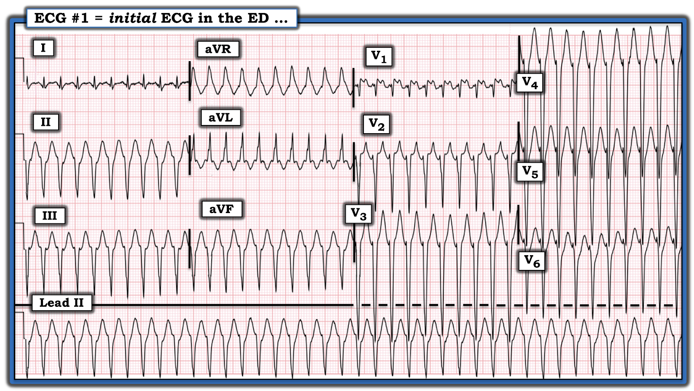
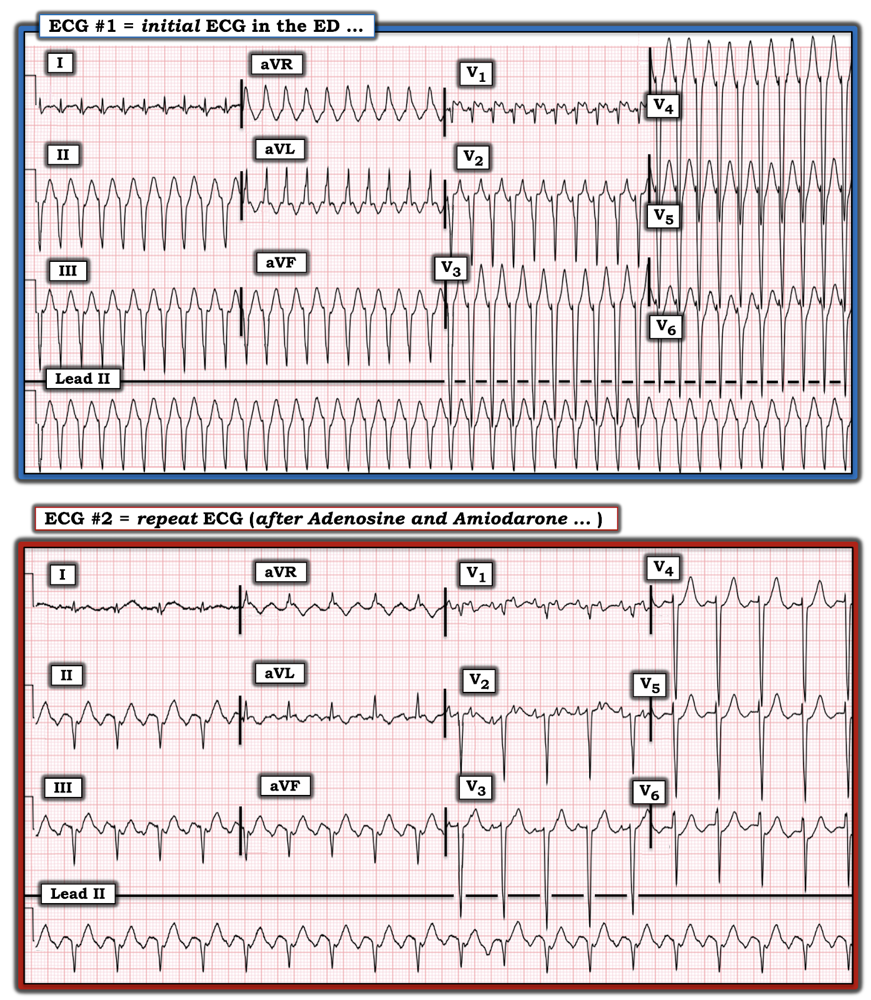
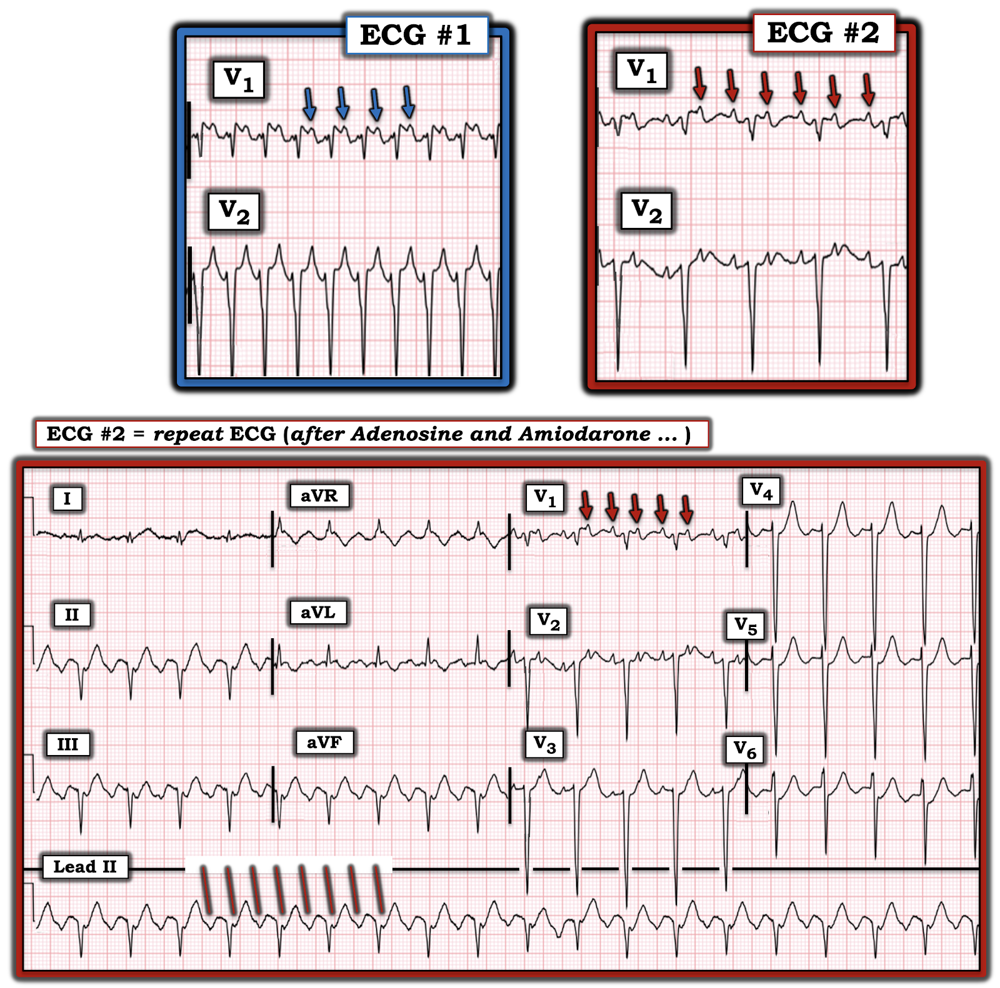

ECG Blog #297 — Đây có phải là VT?
Điện tâm đồ ở Hình-1 được ghi từ một người đàn ông lớn tuổi với than phiền chính là cảm giác đè nặng ngực và khó thở trong vài ngày qua. Bệnh nhân ổn định huyết động tại thời điểm ghi bản ghi ở Hình-1.
- Đây có phải là VT (nhịp nhanh thất – Ventricular Tachycardia)?
- Bạn chắc chắn đến mức nào về câu trả lời của mình?


=================================
LƯU Ý: Để hữu ích tối đa cho lâm sàng — tôi chia phần bình luận của mình thành 2 phần: i) Đánh giá nhanh ban đầu của tôi (mà tôi hoàn thành trong vòng vài giây sau khi nhìn thấy bản ghi này); và, ii) Đánh giá lần thứ 2 (chi tiết hơn) của tôi về bản ghi này — chú ý nhiều hơn tới các dấu hiệu điện tâm đồ cụ thể:
- “Tin tốt” — là bệnh nhân trong ca hôm nay ổn định huyết động tại thời điểm ghi điện tâm đồ ở Hình-1. Do đó, theo định nghĩa — điều này cho chúng ta ít nhất một “khoảnh khắc thời gian” để đánh giá nhịp mà không cần sốc điện chuyển nhịp (cardioversion) ngay lập tức.
Đánh giá nhanh ban đầu của tôi (Hoàn thành trong vài giây! ):
Theo cách tiếp cận Ps, Qs, 3R (ECG Blog #185):
- Nhịp nhanh – Rapid (rõ ràng trên 200/phút) — và đều – Regular. Phức bộ QRS trông rộng (dù không rộng lắm) — và tôi không thấy sóng P xoang. Do đó — nhịp ở Hình-1 là một WCT ( = nhịp nhanh QRS rộng – Wide-Complex Tachycardia) đều, nhưng không có dấu hiệu rõ ràng của hoạt động nhĩ.
- Điểm CHÍNH: Ngay cả trước khi xem xét các đặc điểm hình thái — xác suất thống kê là ít nhất 80% một bệnh nhân lớn tuổi có nhịp WCT đều không có dấu hiệu rõ ràng của hoạt động nhĩ rốt cuộc sẽ là VT. (Xác suất này có lẽ vượt quá 90% nếu bệnh nhân có bệnh tim nền).
- Bước TIẾP THEO: Tôi ưa dùng “3 Quy tắc Đơn giản (Rules)” để phân biệt nhanh giữa VT và nhịp SVT (Xem ECG Blog #196 — kể cả phần Audio Pearl trong bài này, để biết thêm về chủ đề này). Việc có trục lệch “cực độ” ở Hình-1 (tức là QRS âm hoàn toàn ở chuyển đạo aVF) — và QRS gần như âm hoàn toàn ở chuyển đạo V6 (chuyển đạo trước tim bên) — càng làm tăng khả năng thống kê rằng nhịp WCT này là VT. Dù vậy — có 2 dấu hiệu điện tâm đồ chống lại việc nhịp này là VT: i) QRS chỉ giãn rộng rất ít; và, ii) Phần đầu của phức bộ QRS ở nhiều chuyển đạo biểu hiện khử cực nhanh (tức là sóng S đi xuống cực kỳ dốc ở hầu như mọi chuyển đạo có QRS âm ưu thế).
- ĐIỀU CỐT LÕI: Khả năng thống kê (với bệnh nhân này là một người đàn ông lớn tuổi) — rằng nhịp WCT đều ở Hình-1 rốt cuộc sẽ là VT là ít nhất 90%. Dù cần nhấn mạnh rằng 90% không giống 100% — Chúng ta cần giả định là VT (và điều trị bệnh nhân tương ứng) — cho đến khi chứng minh được điều ngược lại.
Đánh giá chi tiết hơn về ca hôm nay:
- Tần số của nhịp ở Hình-1 cực kỳ nhanh. Có nhiều cách để ước tính nhanh tần số tim rất nhanh (Xem ECG Blog #210 — và ECG Blog #278 để xem minh họa chi tiết phương pháp Cách-Một-Nhát (Every-Other-Beat Method) của tôi). Khoảng R-R của nhịp hôm nay chỉ dài hơn 1 ô lớn một chút — tương ứng với tần số tim ~240/phút.
- Chúng ta được cho biết bệnh nhân hôm nay “ổn định huyết động” tại thời điểm ghi điện tâm đồ ở Hình-1. Tuy nhiên, bệnh nhân này “lớn tuổi” — tần số thất của nhịp WCT này cực kỳ nhanh (~240/phút) — và bệnh nhân đang có triệu chứng (tức là “đè nặng ngực" và "khó thở”) tại thời điểm ghi điện tâm đồ này. Điều này đặt ra câu hỏi: Bệnh nhân này có thực sự ổn định huyết động không?
- Tôi luôn cảm thấy rằng trong những trường hợp như vậy, “Phải có mặt ở đó mới biết” (“Ya Gotta Be There”) thì mới đánh giá tối ưu được tình trạng ổn định huyết động (Xem ECG Blog #220 — để xem bàn luận đầy đủ về chủ đề này). Dù lúc đầu chọn thử điều trị nội khoa có thể là hợp lý — chúng ta cần nhận ra rằng, trong trường hợp tốt nhất, “sự ổn định huyết động” của bệnh nhân này cũng chỉ ở mức ranh giới. NẾU tại bất kỳ thời điểm nào trong quá trình điều trị mà tình trạng bệnh nhân xấu đi — sẽ cần sốc điện chuyển nhịp ngay.
- Đôi khi rất khó đánh giá chính xác thời gian QRS tại giường bệnh ở một bệnh nhân có triệu chứng đang trong một rối loạn nhịp rất nhanh. Ở Hình-1 — QRS thực ra trông hẹp ở một số chuyển đạo (tức là ở các chuyển đạo I, aVL, V1 — và ở một số chuyển đạo có QRS âm ưu thế). Hãy nhớ: thời gian QRS nên được đo ở chuyển đạo mà bạn thấy rõ điểm bắt đầu và kết thúc của phức bộ QRS — và ở đó QRS trông rộng nhất! Nếu chọn chuyển đạo aVR ở Hình-1 — QRS chắc chắn trông rộng!
- Cũng có thể khó đánh giá hoạt động nhĩ trong các rối loạn nhịp nhanh. Chúng ta tìm nhiều loại hoạt động nhĩ khác nhau: i) Có sóng P xoang không? (tức là sóng P dương rõ ở chuyển đạo II?); ii) Có sóng P ngược dòng không? (tức là sóng P xuất hiện đều đặn sau QRS — âm ở các chuyển đạo dưới, nhưng dương ở các chuyển đạo như aVR và V1?); iii) Có sóng "rung" không? — sóng "cuồng" không? — hay bằng chứng khác của hoạt động nhĩ?; và/hoặc, iv) Chúng ta có thấy phân ly nhĩ thất (AV dissociation) không?
- ĐIỂM THEN CHỐT (PEARL) #1: Mặc dù dấu hiệu phân ly nhĩ thất có thể ủng hộ mạnh rằng một nhịp WCT đều là VT (Xem ECG Blog #217) — rất khó nhận ra phân ly nhĩ thất khi tần số của nhịp WCT nhanh. Theo kinh nghiệm của tôi, nhiều bác sĩ lâm sàng nghĩ họ thấy "phân ly nhĩ thất" — trong khi thực tế không tìm được nhịp xoang nền đều đặn đáng tin cậy nào. Điều này có thể dẫn đến chẩn đoán sai. Tốt nhất là không kết luận phân ly nhĩ thất trừ khi bạn chứng minh được một cách đáng tin cậy (tức là bằng compa đo (calipers)) một nhịp xoang nền đều đặn, lặp lại được, xen giữa các phức bộ rộng của cơn nhịp nhanh.
- Tôi không thấy sóng P xoang ở Hình-1. Tôi không thấy bằng chứng rõ ràng của hoạt động nhĩ ngược dòng. Dấu hiệu khả dĩ duy nhất của hoạt động nhĩ mà tôi thấy là một chỗ lệch nhỏ theo sau phức bộ QRS ở chuyển đạo V1. Vì tôi không thấy hoạt động này ở các chuyển đạo khác (và vì ngay cả khi có, tôi cũng không phân biệt được đây là chỗ lệch dương hay âm) — tôi đã không đưa chỗ lệch này vào đánh giá nhịp của mình (vì nó không mang giá trị chẩn đoán).
- ĐIỀU CỐT LÕI: Ngay cả sau khi phân tích kỹ hơn — tôi vẫn đi đến cùng một kết luận: Khả năng thống kê rằng nhịp WCT đều ở Hình-1 rốt cuộc sẽ là VT là ít nhất 90%. Dù 90% không giống 100% — Chúng ta cần giả định là VT (và điều trị bệnh nhân tương ứng) — cho đến khi chứng minh được điều ngược lại.
- T.B. (P.S.) — Nếu nhịp ở Hình-1 rốt cuộc là nhịp trên thất (về thống kê là khó xảy ra — nhưng vẫn có thể) — tôi nghĩ khi đó chẩn đoán khả dĩ nhất sẽ là một nhịp SVT vào lại (tức là AVNRT hoặc AVRT xuôi chiều) — vì cuồng nhĩ (AFlutter) hiếm khi biểu hiện với dẫn truyền nhĩ thất 1:1.
Diễn Tiến: Ca bệnh tiếp diễn:
Bệnh nhân được điều trị 1 liều Adenosine nhưng không có hiệu quả. Bắt đầu dùng Amiodarone — và vài phút sau ghi được điện tâm đồ #2 (bản ghi phía dưới ở Hình-2).
- BẠN sẽ diễn giải điện tâm đồ ghi lại này như thế nào?
- Điện tâm đồ #2 có giải thích được nhịp ở điện tâm đồ #1 là gì không?
- GỢI Ý: Hãy tìm kỹ lại hoạt động nhĩ ở cả hai bản ghi!


TRẢ LỜI:
Tần số thất đã chậm lại đáng kể ở điện tâm đồ #2 (từ ~240/phút — xuống ~115/phút ở điện tâm đồ #2). Giờ đây có thể thấy hình ảnh răng cưa của AFlutter (cuồng nhĩ – Atrial Flutter) ở từng chuyển đạo dưới.
- Nhịp ở điện tâm đồ #2 là AFlutter với dẫn truyền nhĩ thất 2:1. Vì tần số thất là 115/phút — tần số nhĩ là 2 x 115 — tức khoảng 230/phút.
- Lưu ý rằng hình thái QRS ở từng chuyển đạo trong 12 chuyển đạo của điện tâm đồ #2 trông gần như giống hệt hình thái QRS ở bản ghi ban đầu (ngoại trừ QRS trông hơi hẹp hơn ở điện tâm đồ #2).
CÂU HỎI:
- Còn hoạt động nhĩ ở cả hai bản ghi thì sao? (Xem Hình-3).


TRẢ LỜI:
Việc hình thái QRS gần như giống hệt nhau ở cả điện tâm đồ #1 và điện tâm đồ #2 — xác nhận rằng nhịp này là nhịp trên thất — và không phải VT.
- Bất chấp chẩn đoán cuối cùng — việc giả định nhịp ở điện tâm đồ #1 là VT và điều trị tương ứng đã là cách tiếp cận phù hợp để xử trí ban đầu! Chúng ta không chắc chắn 100% về chẩn đoán từ Hình-1 — nhưng chúng ta thường phải bắt đầu xử trí trước khi biết chắc chắn nguyên nhân của nhịp mà mình đang điều trị.
- Điều trị bằng cả Adenosine và Amiodarone là phù hợp trong ca này. Việc phức bộ QRS chỉ giãn rộng rất ít ở điện tâm đồ #1 gợi ý rằng NẾU nhịp là VT — thì có thể đó là một dạng VT vô căn (tức là VT khi không có bệnh tim nền) — và một số VT vô căn có đáp ứng với Adenosine (Xem ECG Blog #197). Còn nếu nhịp là nhịp trên thất — thì Adenosine sẽ chuyển nhịp hoặc làm chậm nhịp tạm thời.
- Ưu điểm của Amiodarone tĩnh mạch như một biện pháp điều trị — là nó có thể điều trị hiệu quả cả nhịp nhanh thất lẫn nhịp nhanh trên thất.
- Về câu hỏi hoạt động nhĩ? — Các đường ĐỎ nghiêng trên dải nhịp chuyển đạo II dài ở điện tâm đồ #2 làm nổi bật hình ảnh răng cưa 2:1 của AFlutter. Hãy nhìn các mũi tên ĐỎ ở chuyển đạo V1 của bản ghi này.
- Chẳng phải hình thái sóng cuồng nhĩ (mũi tên ĐỎ) ở chuyển đạo V1 của điện tâm đồ #2 giống hệt hình thái của chỗ lệch được đánh dấu bằng các mũi tên XANH ở chuyển đạo V1 của điện tâm đồ ban đầu sao?
- ĐIỂM THEN CHỐT (PEARL) #2: Lúc đầu tôi đã không nhận ra rằng chỗ lệch tôi thấy ở điện tâm đồ #1 (mũi tên XANH) chính là hoạt động cuồng nhĩ 1:1! Đôi khi nguyên nhân của một rối loạn nhịp chỉ trở nên rõ ràng sau khi chuyển về nhịp xoang, khi bạn so sánh bản ghi "trong cơn" và "sau cơn". Tôi thấy ca hôm nay rất thú vị — vì hóa ra nhịp ban đầu ở Hình-1 là AFlutter với dẫn truyền nhĩ thất 1:1! Rất hiếm gặp dẫn truyền nhĩ thất 1:1 ở một bệnh nhân cuồng nhĩ không dùng thuốc chống loạn nhịp và không có đường phụ.
- ĐIỂM THEN CHỐT (PEARL) #3: Mặc dù hình thái QRS của nhịp WCT ban đầu ở Hình-1 gợi ý mạnh rằng nhịp là VT (tức là trục mặt phẳng trán cực độ — QRS dương hoàn toàn ở chuyển đạo aVR — QRS gần như âm hoàn toàn ở chuyển đạo V6) — hóa ra nhịp lại là nhịp trên thất. Do đó — dù hình thái QRS có hữu ích đến đâu trong đánh giá các nhịp WCT đều — nó không hoàn hảo để phân biệt giữa VT và nhịp SVT.
- T.B. (P.S.): Vì chúng ta đã tính tần số thất của nhịp ở điện tâm đồ #1 là ~240/phút — và vì đã xác định nhịp này là AFlutter với dẫn truyền nhĩ thất 1:1 — tần số sóng cuồng nhĩ ban đầu cũng là 240/phút. Sau khi dùng Amiodarone tĩnh mạch — dẫn truyền nhĩ thất giảm xuống 2:1 — và — tần số nhĩ của sóng cuồng nhĩ được thấy giảm xuống ~230/phút (tức là dẫn truyền nhĩ thất 2:1, với tần số thất ~115/phút).
==============================
Lời cảm ơn: Xin cảm ơn 陳俊宏 (Chun-Hung Chen đến từ Taichung City, Taiwan) đã chia sẻ ca bệnh và bản ghi này.
==================================
=======================
Các bài ECG Blog liên quan đến ca hôm nay:
- ECG Blog #185 — Ôn lại Hệ thống đọc nhịp của tôi, theo cách tiếp cận Ps, Qs & 3R.
- ECG Blog #210 — Ôn lại phương pháp Cách-Một-Nhát (hoặc Cứ-Mỗi-Ba-Nhát) để ước tính tần số tim nhanh — và bàn về một ca khác có nhịp WCT đều.
- ECG Blog #278 — Ôn lại thêm một ví dụ về cách ước tính nhanh một tần số rất nhanh của nhịp WCT này.
- ECG Blog #196 — Ôn lại một ca khác có nhịp WCT đều.
- ECG Blog #197 — Ôn lại khái niệm VT vô căn, trong đó VT phân nhánh (fascicular VT) là một trong 2 thể thường gặp nhất.
- ECG Blog #204 — Ôn lại chẩn đoán điện tâm đồ các blốc nhánh (RBBB/LBBB/IVCD).
- ECG Blog #203 — Ôn lại chẩn đoán điện tâm đồ về trục và các blốc phân nhánh. Để ôn lại hình thái QRS trong các blốc hai phân nhánh (RBBB/LAHB; RBBB/LPHB) — Xem video ECG Media Pearl #21 trong bài blog này.
- ECG Blog #220 — Nghiên cứu ca bệnh ôn lại DANH SÁCH #1: của tôi: Phân biệt giữa VT và SVT kèm BBB có sẵn hoặc dẫn truyền lệch hướng. (Audio Pearl = Làm thế nào để xác định NẾU bệnh nhân của bạn ổn định huyết động).
- ECG Blog #211 — TẠI SAO lại xảy ra dẫn truyền lệch hướng?
- ECG Blog #217 — Ôn lại khái niệm phân ly nhĩ thất có thể giúp ích thế nào trong chẩn đoán VT (kể cả phần Audio Pearl trong bài này).